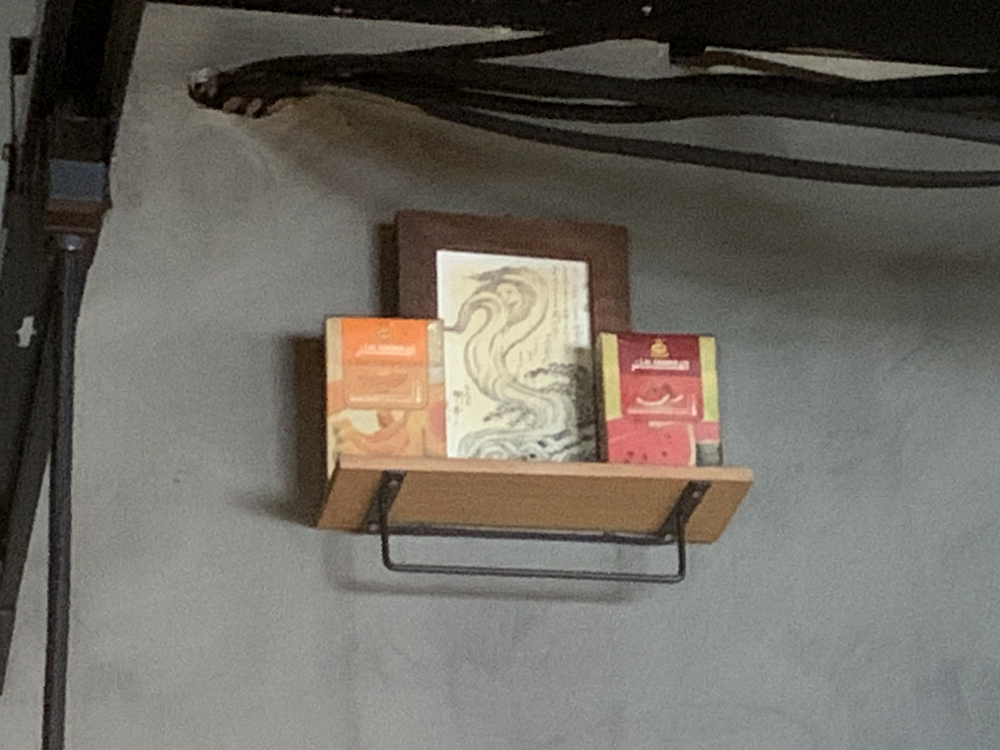
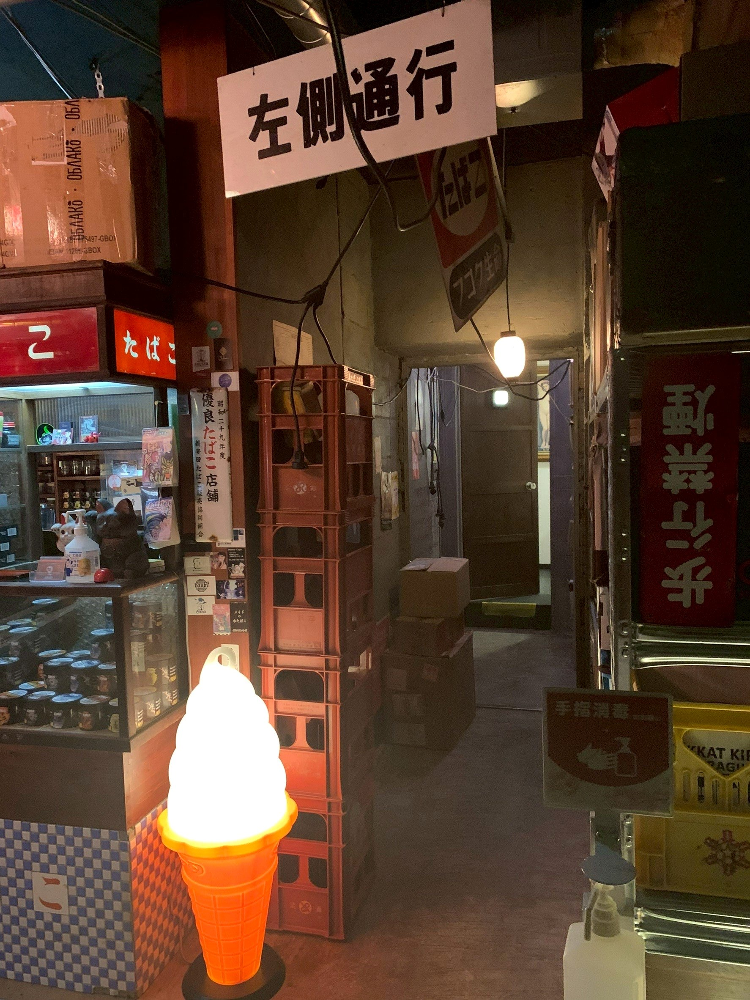

この店は、まだここにある。
入口の自動販売機は、今も扉のふりをしている。
看板は、少し古くなった。
カウンターの木には、細かい傷が増えた。
ショーケースのガラスは、何度拭いても少しだけ曇る。
小上がりには、誰かが長く座った跡が残る。
五年経った。
そう書くと、長いような気もする。
でも、店の中にいると、あまり時間が経った感じがしない。
煙はいつも、少し遅れて残る。
人が帰ったあとも、
話し声が消えたあとも、
グラスを片付けたあとも、
煙だけは、少しだけそこにいる。
新しいスタッフが入るたびに、同じことを聞かれる。
誰もいないのに、人の気配がすること。
お客さんが来たわけでもないのに、入口の扉が開く音がすること。
カウンターの向こうに、誰かが立っているような気がすること。
最初は、みんな少し怖がる。
でも、長くいるスタッフはだいたい同じように答える。
「えんらえんらじゃない？」
冗談みたいに言う。
でも、誰も強く否定しない。
そのうち、新しいスタッフも慣れていく。
扉の音がしても、
気配がしても、
奥で何かが小さく鳴っても、
「ああ、いるな」
くらいで済ませるようになる。
常連さんの吐く煙に、
顔のようなものが見えることがある。
目のようなもの。
口のようなもの。
笑っているようにも、
こちらを見ているようにも見える。
そういう時のシーシャは、だいたい出来がいい。
味がまとまっている。
煙がやわらかい。
話が長く続く。

開店からしばらく経ったころ、
カウンターの内側に、
えんらえんらの居場所を作った。
大げさなものではない。
小さな場所。
少しだけ空けてある場所。
誰のものでもないけれど、
誰も勝手には動かさない場所。
店が暇な日、
お客さんがなかなか来ない日、
たまにそこに向かってお願いしてみる。
誰か来てほしいな、と思う。
声に出すこともある。
出さないこともある。
すると、たまに入口の自動販売機が動く。
誰かが入ってくる。
偶然かもしれない。
でも、そういう偶然を何度も見ていると、
偶然だけでは片づけにくくなる。

えんらえんらは、
店を作る前から、元々ここにいたのかもしれない。
それとも、
店ができて、
人が来て、
煙が満ちて、
ここが気に入って居着いたのかもしれない。
どちらなのかは、わからない。
でも、たぶん今はここにいる。
この店の中に。
煙の中に。
人の気配の中に。
扉が開く音の中に。
これからも、いるんだろう。
煙羅煙羅は、五年経った。
この場所は、まだ覚えている。
そしてたぶん、
これから来る人のことも、
少しずつ覚えていく。
それとも、
これからも居てもいい？
来年も、これからも、
煙を絶やすつもりはないよ。
だから、ここに居てね。